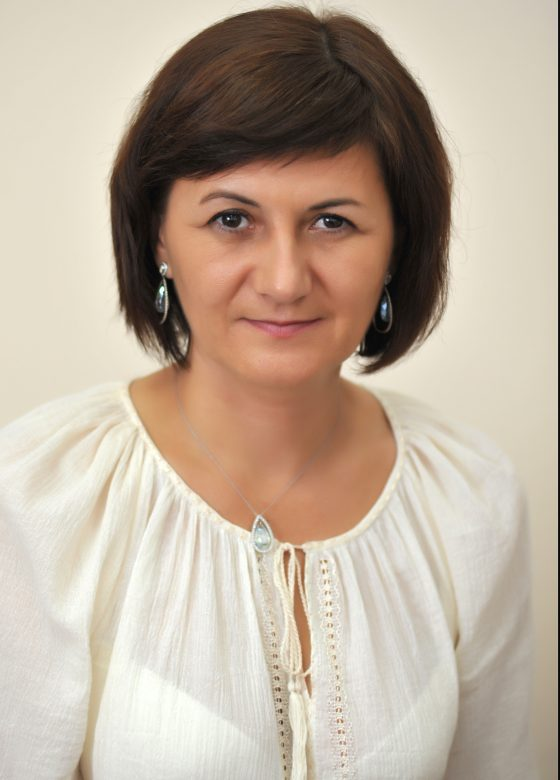
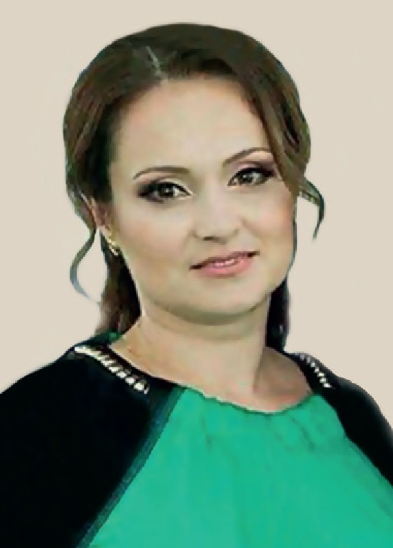
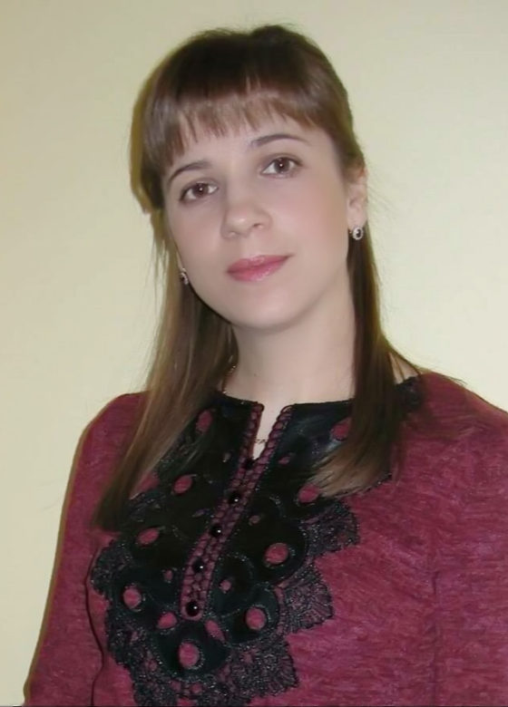
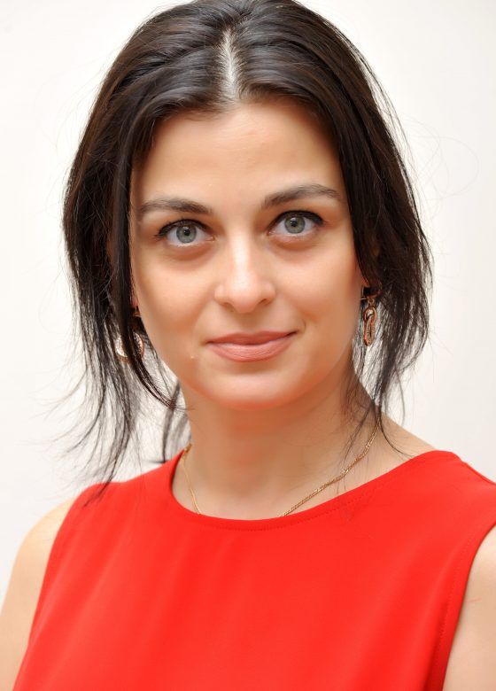
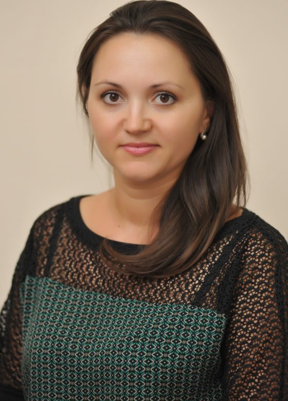
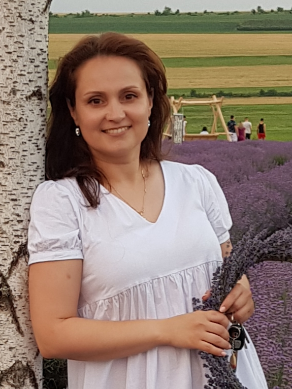

Members
The presented teachers educate future experts in various domains. Their degrees serve the need of producing graduates that strengthen the world workforce. In this way, their work impacts not only Prometeu students, but also the quality of language education in the entire country.
Mamaliga Angela
The head of the FLD, The Superior Didactic Degree, CELTA certified. Always remembers what it was like to be a student and treats students as equals. Teaches excellent pronunciation, vocabulary and grammar skills. Always keeps on improving her own language skills!
Munteanu Svetlana
The First Didactic Degree, CELTA certified. The best at assessing the progress, strengths and weaknesses of her students. Always helps them to fill gaps in their knowledge and encourages them to learn best!
Munteanu Svetlana
The First Didactic Degree, CELTA certified. Always creates great supportive material which is popular with her students and gets great feedback!
Grama Stella
The First Didactic Degree, CELTA certified. The most dynamic teacher that always keeps on learning about the latest theories on teaching and uses these to update her practice!
Andronic Carolina
The Second Didactic Degree, CELTA certified.Interactive screens, websites and apps are part of her job. Tries to use them properly and helps students to do so, tries to support colleagues in the staffroom to use technology well!
Doros Viorica
The Second Didactic Degree. Gets her students focusing on lessons and keeps their interest. Possesses the skills to keep students learning and the confidence to use self improvement!
Tolico Doina
The First Didactic Degree. Always enthuses students and helps them learn, whether in science, maths, history or geography. She encourages students tolearn some practical tasks and activities.
Gîlcă Doina
The First Didactic Degree, CELTA certified. Her ability to give constructive criticism and the communication skill enables students to communicate effectively with peers!
Gropa Galina
The Superior Didactic Degree. Dynamic and always ready to implement the innovation. Comfortable working with students of different levels!